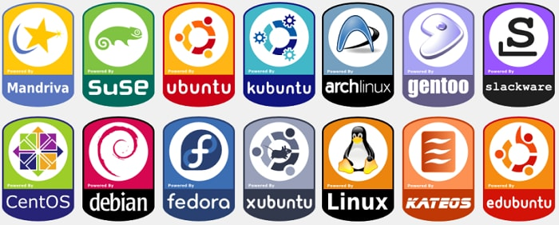

Introduction Windows Linux MacOS Android

Linux is a family of open-source Unix-like operating systems based on the Linux kernel, an operating system kernel first released on September 17, 1991, by Linus Torvalds. Linux is typically packaged in a Linux distribution.
Distributions include the Linux kernel and supporting system software and libraries, many of which are provided by the GNU Project. Many Linux distributions use the word "Linux" in their name, but the Free Software Foundation uses the name "GNU/Linux" to emphasize the importance of GNU software, causing some controversy.
Popular Linux distributions include Debian, Fedora, and Ubuntu. Commercial distributions include Red Hat Enterprise Linux and SUSE Linux Enterprise Server. Desktop Linux distributions include a windowing system such as X11 or Wayland, and a desktop environment such as GNOME or KDE Plasma. Distributions intended for servers may omit graphics altogether, or include a solution stack such as LAMP. Because Linux is freely redistributable, anyone may create a distribution for any purpose.
The primary difference between Linux and many other popular contemporary operating systems is that the Linux kernel and other components are free and open-source software. Linux is not the only such operating system, although it is by far the most widely used. Some free and open-source software licenses are based on the principle of copyleft, a kind of reciprocity: any work derived from a copyleft piece of software must also be copyleft itself. The most common free software license, the GNU General Public License (GPL), is a form of copyleft, and is used for the Linux kernel and many of the components from the GNU Project.
Linux-based distributions are intended by developers for interoperability with other operating systems and established computing standards. Linux systems adhere to POSIX, SUS, LSB, ISO, and ANSI standards where possible, although to date only one Linux distribution has been POSIX.1 certified, Linux-FT.
Free software projects, although developed through collaboration, are often produced independently of each other. The fact that the software licenses explicitly permit redistribution, however, provides a basis for larger-scale projects that collect the software produced by stand-alone projects and make it available all at once in the form of a Linux distribution.
Many Linux distributions manage a remote collection of system software and application software packages available for download and installation through a network connection. This allows users to adapt the operating system to their specific needs. Distributions are maintained by individuals, loose-knit teams, volunteer organizations, and commercial entities. A distribution is responsible for the default configuration of the installed Linux kernel, general system security, and more generally integration of the different software packages into a coherent whole. Distributions typically use a package manager such as apt, yum, zypper, pacman or portage to install, remove, and update all of a system's software from one central location.
